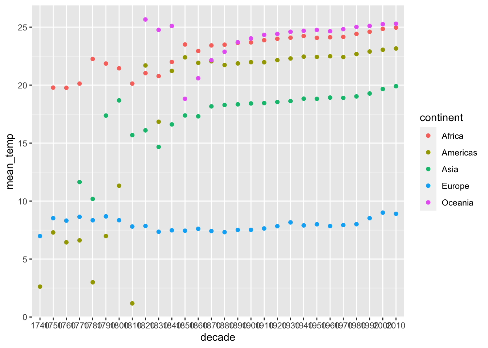
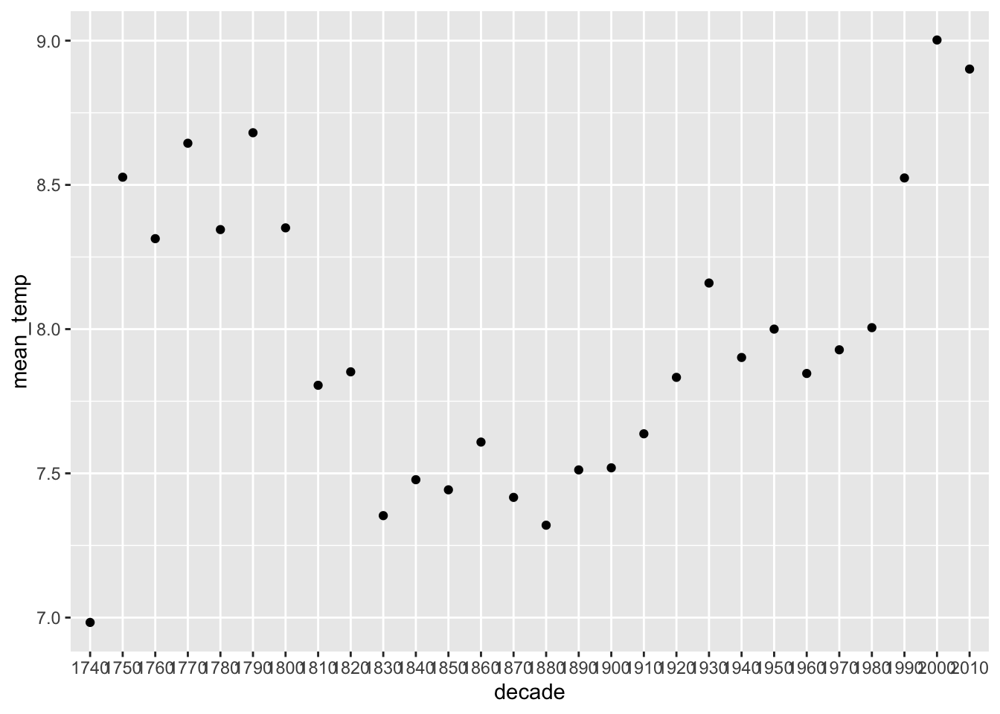
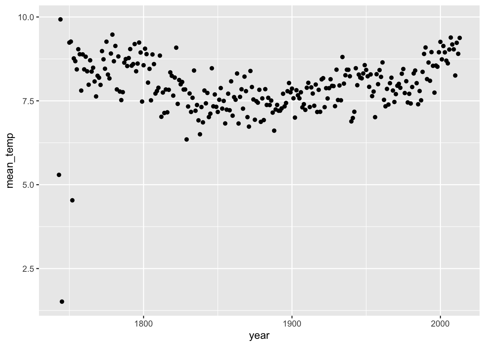
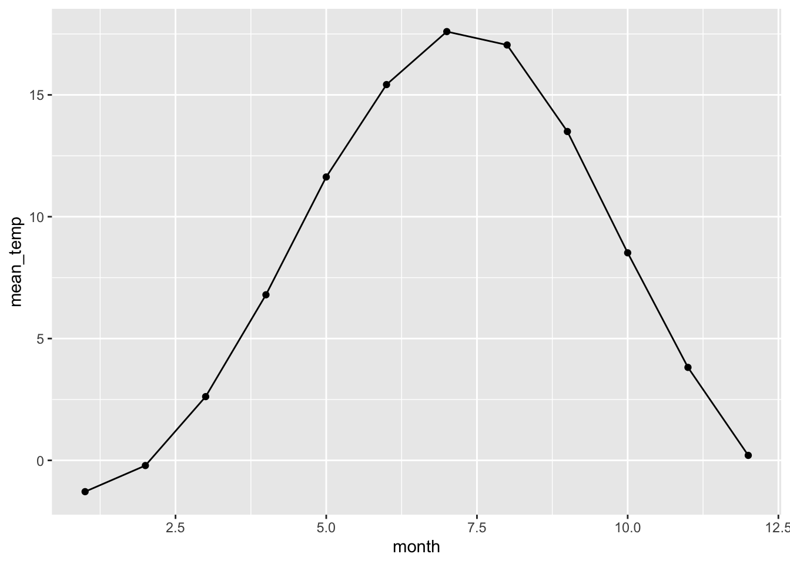

Module 11 Data Case Study 2
We’ve been working mainly with the tidyverse library, but today we will work with a few different libraries. The packages janitor and lubridate are very useful. Maybe sure you have these installed (use install.packages) before you load these libraries.
##
## Attaching package: 'janitor'## The following objects are masked from 'package:stats':
##
## chisq.test, fisher.test11.1 Reading data from a URL
Today we are working with a large data set on global land temperatures. I added the csv file to github because it’s a very large file. You can use read_csv to read the file directly from github
global_temperatures <- read_csv("https://raw.githubusercontent.com/esoc214/fall2020_002_class_scripts/main/data/GlobalLandTemperaturesByCountry.csv") ## Parsed with column specification:
## cols(
## dt = col_date(format = ""),
## AverageTemperature = col_double(),
## AverageTemperatureUncertainty = col_double(),
## Country = col_character()
## )## Rows: 577,462
## Columns: 4
## $ dt <date> 1743-11-01, 1743-12-01, 1744-01-01, 17…
## $ AverageTemperature <dbl> 4.384, NA, NA, NA, NA, 1.530, 6.702, 11…
## $ AverageTemperatureUncertainty <dbl> 2.294, NA, NA, NA, NA, 4.680, 1.789, 1.…
## $ Country <chr> "Åland", "Åland", "Åland", "Åland", "Ål…11.2 Cleaning up column names
Column names from different data sets usually have a number of different casings (Camel, Pascal, Snake, Kebab Case, etc.). I like to use clean_names() to standardize column names to snake_case.
global_temperatures <- global_temperatures %>%
clean_names()
# inspect data
glimpse(global_temperatures)## Rows: 577,462
## Columns: 4
## $ dt <date> 1743-11-01, 1743-12-01, 1744-01-01, …
## $ average_temperature <dbl> 4.384, NA, NA, NA, NA, 1.530, 6.702, …
## $ average_temperature_uncertainty <dbl> 2.294, NA, NA, NA, NA, 4.680, 1.789, …
## $ country <chr> "Åland", "Åland", "Åland", "Åland", "…11.3 Manipulating Dates
Now, let’s turn our attention to the dt column, which is a date.
## [1] "Date"There’s a number of functions we can run on a Date variable.
## [1] 1743 1743 1744 1744 1744 1744 1744 1744 1744 1744## [1] 11 12 1 2 3 4 5 6 7 8## [1] Nov Dec Jan Feb Mar Apr May Jun Jul Aug
## 12 Levels: Jan < Feb < Mar < Apr < May < Jun < Jul < Aug < Sep < ... < Dec## [1] 44 48 1 5 9 14 18 22 27 31We can create new columns in our data frame with year, month, and week extracted from dt in our data frame by using mutate.
## # A tibble: 577,462 x 7
## dt average_temperat… average_temperature_… country year month decade
## <date> <dbl> <dbl> <chr> <dbl> <dbl> <dbl>
## 1 1743-11-01 4.38 2.29 Åland 1743 11 1740
## 2 1743-12-01 NA NA Åland 1743 12 1740
## 3 1744-01-01 NA NA Åland 1744 1 1740
## 4 1744-02-01 NA NA Åland 1744 2 1740
## 5 1744-03-01 NA NA Åland 1744 3 1740
## 6 1744-04-01 1.53 4.68 Åland 1744 4 1740
## 7 1744-05-01 6.70 1.79 Åland 1744 5 1740
## 8 1744-06-01 11.6 1.58 Åland 1744 6 1740
## 9 1744-07-01 15.3 1.41 Åland 1744 7 1740
## 10 1744-08-01 NA NA Åland 1744 8 1740
## # … with 577,452 more rowsInstead of just printing to the console, let’s change the original data frame.
global_temperatures <- global_temperatures %>%
mutate(year = year(dt),
month = month(dt),
decade = gsub("([12][0-9][0-9])[0-9]", "\\10", year))
# inspect changes
glimpse(global_temperatures)## Rows: 577,462
## Columns: 7
## $ dt <date> 1743-11-01, 1743-12-01, 1744-01-01, …
## $ average_temperature <dbl> 4.384, NA, NA, NA, NA, 1.530, 6.702, …
## $ average_temperature_uncertainty <dbl> 2.294, NA, NA, NA, NA, 4.680, 1.789, …
## $ country <chr> "Åland", "Åland", "Åland", "Åland", "…
## $ year <dbl> 1743, 1743, 1744, 1744, 1744, 1744, 1…
## $ month <dbl> 11, 12, 1, 2, 3, 4, 5, 6, 7, 8, 9, 10…
## $ decade <chr> "1740", "1740", "1740", "1740", "1740…11.4 Extra Data libraries
If you need some hierarchical information that is not present in your data frame, such as continent based on country, check if there is a package that will do that for you. In our case, we will use the countrycode package.
Let’s look at our country variable.
## # A tibble: 243 x 2
## country n
## <chr> <int>
## 1 Afghanistan 2106
## 2 Africa 1965
## 3 Åland 3239
## 4 Albania 3239
## 5 Algeria 2721
## 6 American Samoa 1761
## 7 Andorra 3239
## 8 Angola 1878
## 9 Anguilla 2277
## 10 Antarctica 764
## # … with 233 more rowsWe use the function countrycode() to get continent from a country name.
# create new column called continent
global_temperatures <- global_temperatures %>%
mutate(continent = countrycode(sourcevar = country,
origin = "country.name",
destination = "continent"))## Warning: Problem with `mutate()` input `continent`.
## ℹ Some values were not matched unambiguously: Africa, Antarctica, Asia, Baker Island, Europe, French Southern And Antarctic Lands, Heard Island And Mcdonald Islands, Kingman Reef, North America, Oceania, Palmyra Atoll, Saint Martin, South America, South Georgia And The South Sandwich Isla, Virgin Islands
##
## ℹ Input `continent` is `countrycode(sourcevar = country, origin = "country.name", destination = "continent")`.## Warning in countrycode(sourcevar = country, origin = "country.name", destination = "continent"): Some values were not matched unambiguously: Africa, Antarctica, Asia, Baker Island, Europe, French Southern And Antarctic Lands, Heard Island And Mcdonald Islands, Kingman Reef, North America, Oceania, Palmyra Atoll, Saint Martin, South America, South Georgia And The South Sandwich Isla, Virgin Islands## Rows: 577,462
## Columns: 8
## $ dt <date> 1743-11-01, 1743-12-01, 1744-01-01, …
## $ average_temperature <dbl> 4.384, NA, NA, NA, NA, 1.530, 6.702, …
## $ average_temperature_uncertainty <dbl> 2.294, NA, NA, NA, NA, 4.680, 1.789, …
## $ country <chr> "Åland", "Åland", "Åland", "Åland", "…
## $ year <dbl> 1743, 1743, 1744, 1744, 1744, 1744, 1…
## $ month <dbl> 11, 12, 1, 2, 3, 4, 5, 6, 7, 8, 9, 10…
## $ decade <chr> "1740", "1740", "1740", "1740", "1740…
## $ continent <chr> "Europe", "Europe", "Europe", "Europe…Always check your data. Let’s look at continent more closely, especially since we got a warning message.
# why some continents were not assigned
global_temperatures %>%
filter(is.na(continent)) %>%
distinct(country)## # A tibble: 15 x 1
## country
## <chr>
## 1 Africa
## 2 Antarctica
## 3 Asia
## 4 Baker Island
## 5 Europe
## 6 French Southern And Antarctic Lands
## 7 Heard Island And Mcdonald Islands
## 8 Kingman Reef
## 9 North America
## 10 Oceania
## 11 Palmyra Atoll
## 12 Saint Martin
## 13 South America
## 14 South Georgia And The South Sandwich Isla
## 15 Virgin IslandsIt seems we can eliminate the rows with NA for continent.
11.5 Exploring Data
Now that our data is clean and transformed, what’s our data question? The data frame is still very large, so some summarization would be helpful.
global_temp_continents %>%
group_by(decade, continent) %>%
summarise(mean_temp = mean(average_temperature, na.rm = TRUE))## `summarise()` regrouping output by 'decade' (override with `.groups` argument)## # A tibble: 128 x 3
## # Groups: decade [28]
## decade continent mean_temp
## <chr> <chr> <dbl>
## 1 1740 Americas 2.62
## 2 1740 Europe 6.98
## 3 1750 Africa 19.8
## 4 1750 Americas 7.30
## 5 1750 Europe 8.53
## 6 1760 Africa 19.8
## 7 1760 Americas 6.44
## 8 1760 Europe 8.31
## 9 1770 Africa 20.1
## 10 1770 Americas 6.61
## # … with 118 more rowsIt’s still a long data frame, plotting helps here.
global_temp_continents %>%
group_by(decade, continent) %>%
summarise(mean_temp = mean(average_temperature, na.rm = TRUE)) %>%
ggplot(aes(x = decade, y = mean_temp, color = continent)) +
geom_point()## `summarise()` regrouping output by 'decade' (override with `.groups` argument)
Looking at the plot above, how reliable do you think these temperatures are? Why?
Let’s look at Europe only.
europe_temps %>%
group_by(decade) %>%
summarise(mean_temp = mean(average_temperature, na.rm = TRUE)) %>%
ggplot(aes(x = decade, y = mean_temp)) +
geom_point()## `summarise()` ungrouping output (override with `.groups` argument)
Now that we have filtered by continent, we can look at year instead of decade, because you have less information to plot (just one continent).
europe_temps %>%
group_by(year) %>%
summarise(mean_temp = mean(average_temperature, na.rm = TRUE)) %>%
ggplot(aes(x = year, y = mean_temp)) +
geom_point()## `summarise()` ungrouping output (override with `.groups` argument)## Warning: Removed 4 rows containing missing values (geom_point).
Let’s look at monthly temperatures
europe_temps %>%
group_by(month) %>%
summarise(mean_temp = mean(average_temperature, na.rm = TRUE)) %>%
ggplot(aes(x = month, y = mean_temp)) +
geom_point() +
geom_line()## `summarise()` ungrouping output (override with `.groups` argument)
Would this pattern, of temperature increase around June, be the same no matter the continent?
11.6 DATA CHALLENGE 06
Accept data challenge 06 assignment